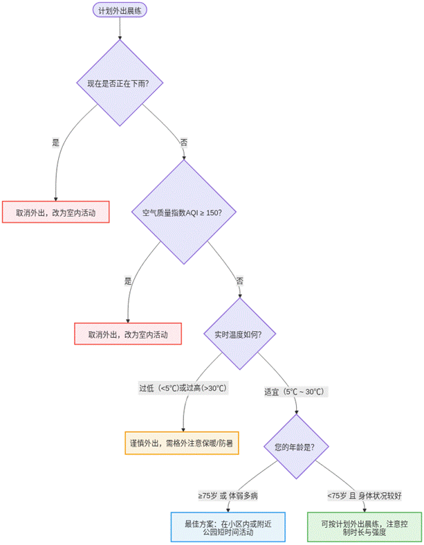

决策树是一种树状结构的分类与预测模型，通过一系列规则对数据进行划分。它模拟人类决策过程，从根节点开始，根据特征条件逐层分支，直到到达叶子节点得出结论。这种方法直观易懂，常用于机器学习和数据挖掘领域进行决策分析。该决策树帮助用户根据天气、空气质量、温度和年龄等因素，科学判断是否适合外出晨练，并提供相应的活动建议，保障健康安全。

【问题】按文中策略，户外多云，空气质量指数为200，适合在小区内短时间活动。